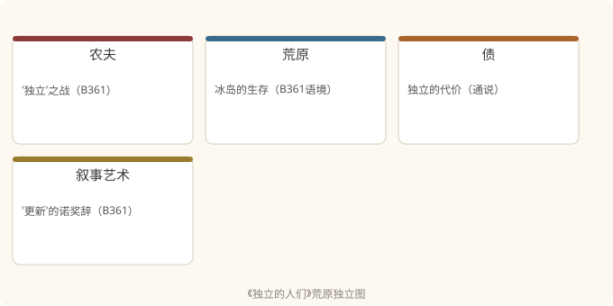

独立的人们
一、基本信息
| 作者 | 哈尔多尔·拉克斯内斯 |
|---|---|
| 成书/出版 | 1934-35年（Britannica B361：Sjálfstætt fólk (Independent People, 1934-35)） Halldor Laxness — Encyclopaedia Britannica（百科全书） |
| 国别/地区 | 冰岛 |
| 时代 | 现当代 · 20世纪30年代 |
| 体裁 | 长篇小说（两部） |
| 语言 | 冰岛语 |

《独立的人们》荒原独立图（主题·结构图）
二、创作背景
Britannica（B361）：'the story of an impoverished farmer and his struggle to retain his economic independence'（一个赤贫农夫与其保持经济独立的斗争）。
Britannica（B361）：拉克斯内斯——1955诺奖——瑞典学院'with having renewed the great narrative art of Iceland'；'the most creative Icelandic writer of the 20th century'。
Britannica（B361）：同期 Salka Valka (1931-32)——'deals with the plight of working people in an Icelandic fishing village'。
三、内容脉络
赤贫农夫的'独立'之战：羊、债与家庭（B361：struggle to retain his economic independence；人名通说待核）。
'独立'的代价：孤傲与失去（通说待核）。
四、主要人物表
| 人物 | 身份 | 说明 |
|---|---|---|
| 比约尔图·科勒克 | 农夫 | （通说待核，B361未载） |
五、主题与艺术特点
- 经济独立的执念（B361）。
- 冰岛农庄的生存史诗（B361 语境）。
- 孤傲的悲剧（通说待核）。
六、影响与评论
- Britannica：1955诺奖——'renewed the great narrative art of Iceland'（B361）。
Halldor Laxness — Encyclopaedia Britannica（百科全书） - Britannica：'the most creative Icelandic writer of the 20th century'（B361）。
Halldor Laxness — Encyclopaedia Britannica（百科全书）
七、阅读建议
难点
- 冰岛农庄经济与氏族记忆。
- '独立'的反讽结构（通说待核）。
- 《独立的人们》中译本（人民文学等——通说待核）。
- 冰岛文原版。
拉克斯内斯首选；后接《冰岛之钟》。
八、待核实
- 农夫名（比约尔图·科勒克说）核对（B361未载）。
- 两部结构（'独立之诗'与'财产之诗'说）待核。
- 1934-35出版细节待核。